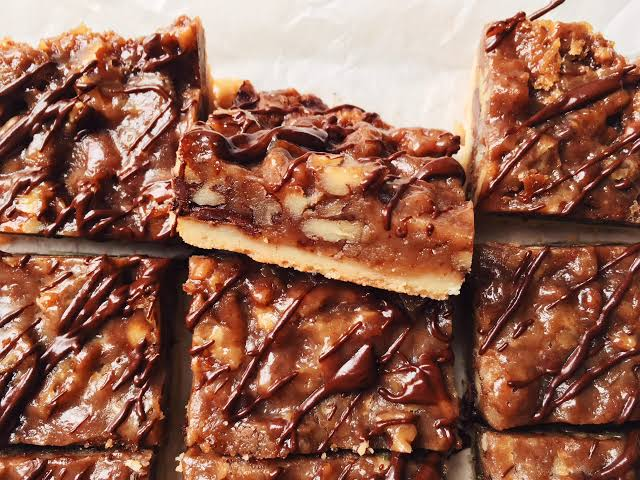

Barritas de galleta de azúcar y pastel de nueces

Descripción
Estas barritas de galleta de azúcar y tarta de nueces tienen una base de masa de galleta y un relleno rápido de tarta de nueces.
Son la manera más fácil de conseguir ese sabor a tarta de nueces que tanto te gusta.
Ingredientes
- 1 tubo (460 g) de masa refrigerada para galletas de azúcar
- 3/4 cucharaditas de sal
- 1/2 cucharadita de bicarbonato de sodio
- 2 1/2 cucharadas de harina de trigo
- 2 huevos AA
- 1 1/2 cucharaditas de extracto de vainilla
- 3 cucharadas de mantequilla derretida
- 2 tazas de nueces finamente picadas
Paso a paso
- Precalienta el horno a 180 grados Celsius (350 grados F). Engrasa ligeramente un molde para hornear de 23 x 33 cm (9 x 13 pulgadas). Extiende la masa para galletas de manera uniforme en el fondo del molde preparado.
- Hornea la masa en el horno precalentado hasta que los bordes estén ligeramente dorados, de 16 a 18 minutos.
- Mientras tanto, mezcla el azúcar moreno, la sal, el bicarbonato de sodio, la harina, los huevos, la vainilla, la mantequilla derretida y las nueces pecanas hasta que estén bien combinados. Vierte la mezcla sobre la base tibia.
- Hornear en el horno precalentado hasta que cuaje, de 15 a 18 minutos. Dejar enfriar completamente antes de cortar y servir, aproximadamente 30 minutos.